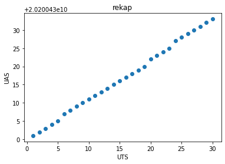

##Test
Pemblokiran indentasi
import matplotlib.pyplot as plt
from kneed import KneeLocator
from sklearn.datasets import make_blobs
from sklearn.cluster import KMeans
from sklearn.metrics import silhouette_score
from sklearn.preprocessing import StandardScaler
ModuleNotFoundErrorTraceback (most recent call last)
<ipython-input-1-2b480584e5ac> in <cell line: 2>()
1 import matplotlib.pyplot as plt
----> 2 from kneed import KneeLocator
3 from sklearn.datasets import make_blobs
4 from sklearn.cluster import KMeans
5 from sklearn.metrics import silhouette_score
ModuleNotFoundError: No module named 'kneed'
---------------------------------------------------------------------------
NOTE: If your import is failing due to a missing package, you can
manually install dependencies using either !pip or !apt.
To view examples of installing some common dependencies, click the
"Open Examples" button below.
---------------------------------------------------------------------------
#Menyiapkan data dan memanggil dataset
dataset = pd.read_csv('mhs.csv')
dataset.keys()
Index(['No', 'NIM', 'NAMA', 'TUGAS INDIVIDU', 'UTS', 'UAS', 'NILAI',
'NILAI ANGKA'],
dtype='object')
dataku = pd.DataFrame(dataset)
dataku.head()
| No | NIM | NAMA | TUGAS INDIVIDU | UTS | UAS | NILAI | NILAI ANGKA | |
|---|---|---|---|---|---|---|---|---|
| 0 | NaN | NaN | NaN | NaN | NaN | NaN | NaN | NaN |
| 1 | NaN | NaN | NaN | NaN | NaN | NaN | NaN | NaN |
| 2 | 1.0 | 2.020043e+10 | NAURA YUNI NAZILAH | 76.0 | 77.0 | 76.0 | 76.3 | 3.7 |
| 3 | 2.0 | 2.020043e+10 | MUJAHIDIN SYAMSU | 68.0 | 70.0 | 70.0 | 69.4 | 3.0 |
| 4 | 3.0 | 2.020043e+10 | THERESIA PINETA HERDIAWATI | 75.0 | 75.0 | 76.0 | 75.4 | 3.3 |
#Konversi ke data Array
X = np.asarray(dataset)
print(X)
[[nan nan nan nan nan nan nan nan]
[nan nan nan nan nan nan nan nan]
[1.0 20200430001.0 'NAURA YUNI NAZILAH' 76.0 77.0 76.0 76.3 3.7]
[2.0 20200430002.0 'MUJAHIDIN SYAMSU' 68.0 70.0 70.0 69.4 3.0]
[3.0 20200430003.0 'THERESIA PINETA HERDIAWATI' 75.0 75.0 76.0 75.4 3.3]
[4.0 20200430004.0 'VITA AYUNINGSIH SETIAWAN' 70.0 70.0 72.0 70.8 3.0]
[5.0 20200430005.0 'INTAN OKTA PERMATA SARI' 72.0 73.0 74.0 73.1 3.3]
[6.0 20200430007.0 'RAFLI FAHREZA DWITAMA' 70.0 70.0 71.0 70.4 3.0]
[7.0 20200430008.0 'AJENG PRAMILIA DEWI' 75.0 75.0 76.0 75.4 3.3]
[8.0 20200430009.0 'ROSY FEBRIANTY' 74.0 75.0 76.0 75.1 3.3]
[9.0 20200430010.0 'FARID AKFA RIDZY' 70.0 72.0 73.0 71.8 3.3]
[10.0 20200430011.0 'ILMATUN NAFIAH' 70.0 71.0 72.0 71.1 3.3]
[11.0 20200430012.0 'TIARA EKA VARISYAH' 75.0 76.0 76.0 75.7 3.3]
[12.0 20200430013.0 'UGI INTAN MAULINA' 75.0 76.0 76.0 75.7 3.3]
[13.0 20200430014.0 'SHAFIRA ATIKA PUTRI' 72.0 74.0 74.0 73.4 3.3]
[14.0 20200430015.0 'KHOIRIYAH NURMANINGSIH' 72.0 73.0 74.0 73.1 3.3]
[15.0 20200430016.0 'DINDA AYU ASHRI' 70.0 72.0 72.0 71.4 3.3]
[16.0 20200430017.0 'SILFIYATUS SALAMAH' 72.0 73.0 72.0 72.3 3.3]
[17.0 20200430018.0 'JEVANIA AGUSTINA' 70.0 72.0 73.0 71.8 3.3]
[18.0 20200430019.0 'ISNA RAHMATIKALANA AL AZIZATI' 72.0 73.0 74.0 73.1
3.3]
[19.0 20200430020.0 'AGATHA SUKMA MAHARANI' 70.0 72.0 73.0 71.8 3.3]
[20.0 20200430022.0 'ALIFFIA SALSABILLA PUTRI SETIAWAN' 70.0 72.0 72.0
71.4 3.3]
[21.0 20200430023.0 'AMELIA PUSPASARI' 72.0 74.0 75.0 73.8 3.3]
[22.0 20200430024.0 'NDARU PUTRI LESTARI' 70.0 72.0 73.0 71.8 3.3]
[23.0 20200430025.0 'LEONORA EIRUMKUY' 70.0 70.0 71.0 70.4 3.0]
[24.0 20200430027.0 'ABI RASYID SUMANTRI' 68.0 70.0 71.0 69.8 3.0]
[25.0 20200430028.0 'GALUH INTAN YUNIA FATMAWATI' 72.0 74.0 74.0 73.4
3.3]
[26.0 20200430029.0 'NANDA APRILIA' 70.0 72.0 73.0 71.8 3.3]
[27.0 20200430030.0 'DITA SAVITRI' 70.0 73.0 74.0 72.5 3.3]
[28.0 20200430031.0 'ANGGY ARISTANTI' 72.0 73.0 75.0 73.5 3.3]
[29.0 20200430032.0 'AINUR RIZQI KUSUMA HADI' 70.0 72.0 73.0 71.8 3.3]
[30.0 20200430033.0 'YURIKA EKA MAILINA' 72.0 74.0 75.0 73.8 3.3]]
#Menampilkan data dalam bentuk scatter plot
plt.scatter(X[:,0], X[:,1], label='True Position')
plt.xlabel("UTS")
plt.ylabel("UAS")
plt.title("rekap")
plt.show()

#Mengaktifkan K-Means dengan jumlah K=2
kmeans = KMeans(n_clusters=2)
kmeans.fit(X)
---------------------------------------------------------------------------
ValueError Traceback (most recent call last)
<ipython-input-13-319db6c030d5> in <module>
1 #Mengaktifkan K-Means dengan jumlah K=2
2 kmeans = KMeans(n_clusters=2)
----> 3 kmeans.fit(X)
/usr/local/lib/python3.8/dist-packages/sklearn/cluster/_kmeans.py in fit(self, X, y, sample_weight)
1135 Fitted estimator.
1136 """
-> 1137 X = self._validate_data(
1138 X,
1139 accept_sparse="csr",
/usr/local/lib/python3.8/dist-packages/sklearn/base.py in _validate_data(self, X, y, reset, validate_separately, **check_params)
564 raise ValueError("Validation should be done on X, y or both.")
565 elif not no_val_X and no_val_y:
--> 566 X = check_array(X, **check_params)
567 out = X
568 elif no_val_X and not no_val_y:
/usr/local/lib/python3.8/dist-packages/sklearn/utils/validation.py in check_array(array, accept_sparse, accept_large_sparse, dtype, order, copy, force_all_finite, ensure_2d, allow_nd, ensure_min_samples, ensure_min_features, estimator)
744 array = array.astype(dtype, casting="unsafe", copy=False)
745 else:
--> 746 array = np.asarray(array, order=order, dtype=dtype)
747 except ComplexWarning as complex_warning:
748 raise ValueError(
ValueError: could not convert string to float: 'NAURA YUNI NAZILAH'
#Menampilkan nilai Centroid yang digenerate oleh algoritma
print(kmeans.cluster_centers_)
#Plot Data Point
#Memvisualisasikan Hasil Klasterisasi Data Rekapitulasi
plt.scatter(X[:,0], X[:,1], c=kmeans.labels_, cmap='rainbow')
plt.xlabel("Keadaan awal 01 Januari 2022")
plt.ylabel("Keadaan akhir 31 Desember 2022")
plt.title("Rekap")
plt.show()
#Plot Data Point
#Memvisualisasikan hasil klasterisasi dengan centroid dr masing2 klaster
plt.scatter(X[:,0], X[:,1], c=kmeans.labels_, cmap='rainbow')
plt.scatter(kmeans.cluster_centers_[:,0], kmeans.cluster_centers_[:,1], color='black')
plt.xlabel("Keadaan awal 01 Januari 2022")
plt.ylabel("Keadaan akhir 31 Desember 2022")
plt.title("Rekap")
plt.show()